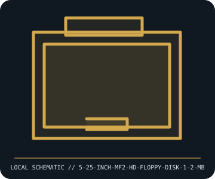

[ REMOVABLE MEDIA // INDIVIDUAL RECORD ]
5.25-inch MF2-HD Floppy Disk (1.2 MB)
5.25-inch double-sided, high-density PC floppy format used with the IBM PC/AT generation. This entry describes the identified medium or reader, not a bundled drive/media pair; exact capacity and compatibility are model- and host-dependent.

IDENTIFICATION: Record the full label, manufacturer part number, revision/date code, format markings, and packaging. Product-family names alone do not identify capacity generation or supported drive.
Format and compatibility
| Catalog subcategory | Magnetic removable cartridges |
|---|---|
| Catalog identity | 5.25-inch MF2-HD Floppy Disk (1.2 MB) |
| Format / era | 5.25-inch double-sided, high-density PC floppy format used with the IBM PC/AT generation |
| Media/device distinction | This record is the removable medium only; the compatible drive is separate and not included. |
| Capacity / interface | 5.25-inch flexible disk; the common 1.2 MB PC format uses 80 tracks per side, 15 sectors per track, and 512-byte sectors (1,228,800 bytes formatted). This is removable media only, not a drive. |
| Compatibility | Requires a 1.2 MB high-density 5.25-inch drive and compatible controller. A 360 KB double-density drive is not an equivalent substitute; cross-density writes can be unreliable because track geometry and head width differ. |
| Variant caveat | “1.2 MB” usually denotes the DOS-formatted capacity (often 1,228,800 bytes); other operating systems and sector layouts differ. Distinguish high-density media by its density hole and label, not age or shell alone. |
Media care and preservation
Keep away from dust, magnetic sources, heat, moisture, and abrupt temperature changes. Handle only by the hub and jacket, never expose or touch the disk surface. Use clean sleeves and a tested drive; image read-only and checksum before any repair or reformat.
- Preserve original packaging, labels, and acquisition/context notes; photograph both sides and record any write-protect state before use.
- Keep valuable contents in at least two independently verified copies on separate storage. Record a checksum and test a restore; removable media alone is not a preservation plan.
Model and version caveats
“1.2 MB” usually denotes the DOS-formatted capacity (often 1,228,800 bytes); other operating systems and sector layouts differ. Distinguish high-density media by its density hole and label, not age or shell alone.
Compatibility statements are limited to the named format/model and published host support. Check manufacturer manual, firmware, regional SKU, and media generation before inserting or writing. A similar connector or cartridge shell is not proof of compatibility.
Sources & further reading
- IBM PC AT Technical ReferenceHistorical primary documentation for the 1.2 MB 5.25-inch high-density PC drive format.
- ECMA International — Standards catalogueStandards catalogue for flexible-disk interchange formats; format and recording profile must match the specific disk.
Sources identify the relevant standard, manufacturer, or product family. Where an archived SKU-specific datasheet is unavailable, the exact label/manual and supported host list take precedence over family-level marketing claims.